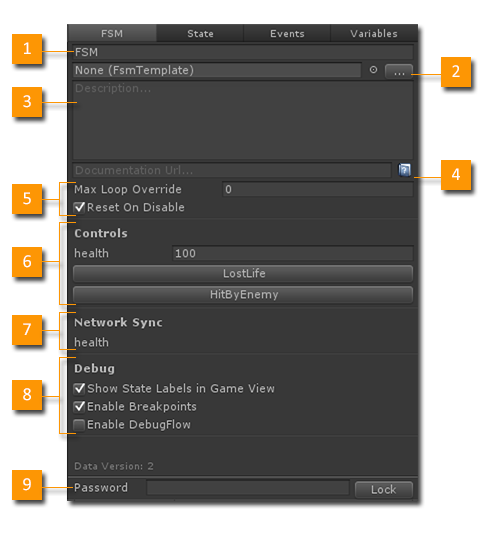
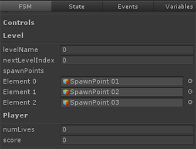

The FSM Inspector lets you edit the selected FSM's properties.

- Name: The name of the FSM.
- Template: Optionally use an FSM Template.
- Description: A description of what the FSM does.
- Documentation Url: An optional url to docs for the FSM.
- Options: The runtime behavior of the FSM. See below.
- Controls: Events and Variables exposed in the Inspector.
- Network Sync: Lists variables flagged for network sync.
- Debug: Debug settings for this FSM.
- Password: Lock editing of the FSM with a Password.
1. Name
Use a name that clearly describes what the FSM does. The name will appear in many places, so a good name goes a long way!
2. Template
FSMs can be saved as Templates for re-use. This field lets you assign a Template to use for this FSM.
Use the Templates Browser to organize Templates in your project.
3. Description
A clear description helps you build an FSM that does exactly what you need it to do.
4. Documentation Url
You can create a web page to document an FSM and link to it here.
5. Options
Max Loop Override
Sometimes when linking states you can accidentally make an infinite loop. The Playmaker runtime breaks out of these loops to avoid crashing Unity. By default if states loop more than 1000 times in a single update Playmaker assumes you've accidentally created an infinite loop. This override lets you increase the limit in the cases where you intentionally want to loop more than 1000 times through some states.
Leave at 0 to use the default limit
Reset On Disable
Normally an FSM restarts when disabled/enabled. Sometimes however, you want the FSM to remember its state when it was disabled. Uncheck this option for that behavior.
6. Controls
The Controls area shows any Variables or Events that you've selected to be shown in the Inspector.
Variables: Variables with Inspector checked in the Variables Manager are shown here.
Events: Events with Inspector checked are exposed as buttons. Press the button to send the event at runtime.
NOTE: You can use Categories to organize variables in the Controls section:

7. Network Sync
Shows the variables in this FSM that will sync over the network.
Set Variables to network sync in the Variables Manager.
8. Debug
Show State Labels in Game View
State Labels are GUI text boxes drawn over a GameObject showing the state of an FSM. This can be a very useful debugging tool. Uncheck this option to hide this FSM's State Labels.
NOTE: State Labels require a PlayMakerGUI component in the scene. You can turn State Labels off globally in Preferences and in the PlayMakerGUI component.
Enable Breakpoints
Enable/disable Breakpoints in this FSM.
Enable Debug Flow
Debug Flow is an advanced debugging option. It keeps a history of FSM Variable values in the FSM Log so when you pause the game you can step back and watch variables change. See Debug Toolbar.
However, this option can effect performance, so you should only enable it when you need to really dig into the FSM Log.
9. Password
Set a Password and hit Lock to password protect editing of an FSM.
Don't forget your password!
Experimental
Experimental features in 1.8.1:
Manual Update
Disables PlayMakerFSM.Update of an FSM so you can update it manually using PlayMakerFSM.Fsm.Update instead. For example, to update an FSM from a Coroutine.
Keep Delayed Events On State Exit
Don't remove delayed events when exiting a state. This lets you "queue up" delayed events, but could be confusing. This is the way delayed events used to work pre-v1.8.
See Also: